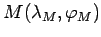
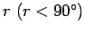
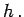
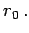
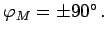
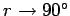

Inhalt Index DeskTop Bronstein

 Geometrie Sphärische Trigonometrie Berechnung sphärischer Dreiecke Kleinkreis
Geometrie Sphärische Trigonometrie Berechnung sphärischer Dreiecke Kleinkreis


Die Definition von Kleinkreisen auf der Kugeloberfläche erfordert eine im Vergleich zu der eingangs gegebenen Begriffsbildung detailliertere Fassung: Danach ist ein Kleinkreis der geometrische Ort aller Punkte, die von einem festen Punkt  auf der Kugeloberfläche den sphärischen Abstand  haben.
Mit M wird der sphärische Mittelpunkt bezeichnet; r heißt spärischer Kleinkreisradius. Die Kleinkreisebene ist die Grundfläche eines Kugelabschnitts mit der Höhe  Der sphärische Mittelpunkt M liegt oberhalb des Kleinkreismittelpunktes in der Kleinkreisebene. Dort hat der Kreis den ebenen Kleinkreisradius 
Breitenkreise sind damit spezielle Kleinkreise mit 
| Beispiel |
|
Für  geht der Kleinkreis in eine Orthodrome über. |